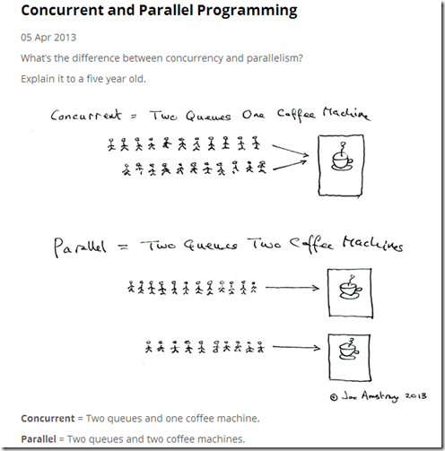

Rust学习笔记4：智能指针、引用和并发
Drop特征
使用drop方法可以回收所有权，释放内存。drop方法不需要程序员手动调用，编译器会为我们自动插入drop代码并在变量退出作用域时调用之。调用顺序是：
- 先声明的后调用，后声明的先调用；
- 在结构体内，结构体的drop先调用，继而按照字段的定义顺序调用字段的drop方法。
对于下面这个示例：
// 定义一个简单的结构体
struct Resource {
name: String,
}
// 为 Resource 实现 Drop trait
impl Drop for Resource {
fn drop(&mut self) {
println!("Dropping resource: {}", self.name);
}
}
fn main() {
// 创建两个 Resource 实例
let resource1 = Resource {
name: "Resource 1".to_string(),
};
let resource2 = Resource {
name: "Resource 2".to_string(),
};
// 创建一个作用域
{
let resource3 = Resource {
name: "Resource 3".to_string(),
};
println!("Resource 3 is in scope");
} // resource3 离开作用域，drop 方法被调用
println!("End of main function");
// resource1 和 resource2 离开作用域，drop 方法被调用
}
输出顺序为：
Resource 3 is in scope Dropping resource: Resource 3 End of main function Dropping resource: Resource 2 Dropping resource: Resource 1
这个顺序验证了上面所讲的drop次序。
引用计数智能指针Rc与Arc
Rc是reference counting的缩写，是引用计数的意思，当我们使用它时，Rust会自动统计、管理引用记数，并在记数为0的时候自动将对象回收。我们可以通用Rc::clone复制对象——复制的仅仅是引用，同时让引用记数加1；可以通过Rc::string_count随时查看引用计数。
无论是Rc还是Arc，都是不可变记数引用，都不能对数据进行修改。两者在使用上没有区别，唯一的区别在于前者用于单线程内，后者用于多线程内。下面看一个Rc的示例：
use std::rc::Rc;
fn main() {
// 创建一个 Rc 实例，引用计数为 1
let data = Rc::new(42);
// 克隆 Rc，引用计数增加
let _data_clone1 = Rc::clone(&data);
let _data_clone2 = Rc::clone(&data);
// 打印引用计数
println!("Reference count after cloning: {}", Rc::strong_count(&data));
// 离开作用域，引用计数减少
{
let _data_clone3 = Rc::clone(&data);
println!("Reference count inside inner scope: {}", Rc::strong_count(&data));
}
// 离开作用域后，引用计数恢复
println!("Reference count after inner scope: {}", Rc::strong_count(&data));
// 离开 main 函数，引用计数降为零，数据被清理
}
在这个示例中，第17行，当离开一个作用域时，引用自动减少了。记数为零时，对象即被清理。
输出结果为：
Reference count after cloning: 3 Reference count inside inner scope: 4 Reference count after inner scope: 3
再看一个Arc示例：
use std::sync::Arc;
use std::thread;
fn main() {
// 创建一个 Arc 实例，引用计数为 1
let data = Arc::new(42);
// 克隆 Arc，引用计数增加
let data_clone1 = Arc::clone(&data);
let data_clone2 = Arc::clone(&data);
// 打印引用计数
println!("Reference count after cloning: {}", Arc::strong_count(&data));
// 创建线程
let handle1 = thread::spawn(move || {
println!("Thread 1: Data = {}", data_clone1);
});
let handle2 = thread::spawn(move || {
println!("Thread 2: Data = {}", data_clone2);
});
// 等待线程完成
handle1.join().unwrap();
handle2.join().unwrap();
// 打印引用计数
println!("Reference count after threads: {}", Arc::strong_count(&data));
// 离开 main 函数，引用计数降为零，数据被清理
}
Arc智能指针允许移动对象进入线程内，多个线程的引用消耗会自动同步。
Cell与RefCell
Cell充许在获取值的同时，还对值进行修改，这跳过了Rust的所有权规则。不过Cell仅针对实现了Copy的数据类型。示例：
use std::cell::Cell;
fn main() {
// 创建一个 Cell，存储一个整数
let value = Cell::new(42);
// 获取 Cell 中的值（通过复制）
println!("Initial value: {}", value.get());
// 修改 Cell 中的值
value.set(100);
// 再次获取 Cell 中的值
println!("Updated value: {}", value.get());
// 通过 `get` 和 `set` 方法修改值
let old_value = value.replace(200);
println!("Replaced value: {}, Old value: {}", value.get(), old_value);
// 使用 `into_inner` 获取 Cell 中的值（消耗 Cell）
let final_value = value.into_inner();
println!("Final value: {}", final_value);
}
这个示例会让Rust初学者感到疑惑，怎么，所有权规则不起作用了吗，一个值同时既可以获取又可以修改吗？但这种Cell仅针对实现了Copy特征的基本类型，例如上面的i32，实际上像i32这样的简单类型一般是没有必要使用Cell的。
输出为：
Initial value: 42 Updated value: 100 Replaced value: 200, Old value: 100 Final value: 200
Cell像一个世外桃园盒子，可以往里面存数据，也可以取数据，貌似还不受Rust所有权规则的约束。
RefCell用于没有实现Copy特征的，在它内部没有发生Copy，内存还是那一块内存，它只是将Rust编译器在编译时的警告延后了，如果在运行时违反了Rust规则，仍然会有panic异常。示例：
use std::cell::RefCell;
fn main() {
// 创建一个 RefCell，存储一个 String
let message = RefCell::new(String::from("Hello"));
// 获取 RefCell 中的不可变引用
{
let msg = message.borrow();
println!("Initial message: {}", *msg);
} // 不可变引用离开作用域，释放借用
// 获取 RefCell 中的可变引用并修改值
{
let mut msg = message.borrow_mut();
msg.push_str(", world!");
} // 可变引用离开作用域，释放借用
// 再次获取 RefCell 中的不可变引用
let msg = message.borrow();
println!("Updated message: {}", *msg);
// 尝试违反借用规则（会导致 panic）
// let mut invalid_borrow = message.borrow_mut(); // 这里会 panic，因为已经有一个不可变引用
}
第24行，因为在第20行已经有一个不可变引用，所以这里不能再有一个可变引用，但这个错误不会在编译期报出来，只会在运行时报出来。第15行有一个可变借用，没有关系，因为到第17行它就释放了。这是使用RefCell的好处，可以跳过编译期严格的检查。
最终输出为：
Initial message: Hello Updated message: Hello, world!
RefCell可以方便地实现内部可变性，当我们不方便修改第三方特征签名的时候，用RefCell的borrow_mut方法，这样可以修改数据。
Rc+RefCell可以结合起来，实现多个变量都能获得可变引用，并进行数据修改的代码。示例：
use std::rc::Rc;
use std::cell::RefCell;
fn main() {
// 创建一个 Rc<RefCell<String>>，存储一个 String
let data = Rc::new(RefCell::new(String::from("Hello")));
// 克隆 Rc，增加引用计数
let data_clone1 = Rc::clone(&data);
let data_clone2 = Rc::clone(&data);
// 修改 data_clone1 中的数据
{
let mut borrowed_data = data_clone1.borrow_mut();
borrowed_data.push_str(", world!");
} // 可变引用离开作用域，释放借用
// 修改 data_clone2 中的数据
{
let mut borrowed_data = data_clone2.borrow_mut();
borrowed_data.push_str(" How are you?");
} // 可变引用离开作用域，释放借用
// 打印最终的数据
println!("Final data: {}", data.borrow());
}
Rust为了实现内存安全，在各个方向上围堵程序员的错误可能性，在实在没有办法的场景，仍然开放了像C++那样信任程序员的方法，给予了程序员自由。
Weak弱引用
Rc<T>中的T仍然受记数约束，只要记数不为0，它就不能被回收。Weak<T>不同，它不影响回收，它只是被动地使用，这种弱化的引用特别适合用于结构体中的自引用。对于Rc<T>，调用downgrade，可以得到一个Weak<T>，在Weak<T>上面调用upgrade方法，又可以得到一个Option<Rc<T>>，它可能是一个Rc<T>，也可以是None。
下面是一个使用了Weak弱引用的例子：
use std::rc::Rc;
use std::rc::Weak;
use std::cell::RefCell;
// 学生
struct Student {
name: String,
friends: RefCell<Vec<Weak<Student>>>,
}
impl Student {
fn new(name: &str) -> Rc<Student> {
Rc::new(Student {
name: name.to_string(),
friends: RefCell::new(Vec::new()),
})
}
fn add_friend(&self, friend: &Rc<Student>) -> &Student {
self.friends.borrow_mut().push(Rc::downgrade(friend));
self
}
}
fn main() {
// 创建三个学生
let xiaoli = &Student::new("小李");
let xiaowang = &Student::new("小王");
let xiaoming = &Student::new("小明");
// 建立朋友关系
xiaoli.add_friend(xiaoming).add_friend(xiaowang);
xiaowang.add_friend(xiaoli).add_friend(xiaoming);
xiaoming.add_friend(xiaoli).add_friend(xiaowang);
// 打印每个学生的朋友
let students = [xiaoli, xiaowang, xiaoming];
for student in students.iter() {
println!("{} 的朋友有:", student.name);
for friend_opt in student.friends.borrow().iter() {
if let Some(friend) = friend_opt.upgrade() {
println!(" - {}", friend.name);
} else {
println!(" - <已删除的朋友>");
}
}
}
// 在 main 函数的最后，xiaoli, xiaowang, xiaoming 都会被销毁
// 由于使用了 Weak<T>，避免了循环引用问题
}
第20行通过downgrade拿到了Weak<Studnet>。
最终输出为：
小李 的朋友有:
- 小明
- 小王
小王 的朋友有:
- 小李
- 小明
小明 的朋友有:
- 小李
- 小王
用裸指针实现结构体的自引用
下面是一个简单的示例，但却无法通过编译：
struct SelfRef<'a> {
value: String,
pointer_to_value: &'a str,
}
fn main() {
let value = String::from("Hello, world!");
let self_ref = SelfRef {
value: value,
pointer_to_value: &value[0..5],
};
println!("value: {}", self_ref.value);
println!("pointer_to_value: {}", self_ref.pointer_to_value);
}
第9行，我们将value的所有权转移到了结构体SelfRef内，第10行，我们又企图用引用的方法划取value中的一部分，既有转移，又有引用，这在其他语言中是很平常的事情，在Rust中无法通过编译。
怎么解决？最简单的方法是在第9行上，给value加一个clone的尾巴。但今天我们不要这样做，示例：
struct SelfRef {
value: String,
pointer_to_value: *const String,
}
impl SelfRef {
fn new(value: String) -> Self {
let pointer_to_value = &value as *const String;
Self {
value,
pointer_to_value,
}
}
fn get_pointer_to_value(&self) -> &str {
unsafe {
&*self.pointer_to_value
}
}
}
fn main() {
let mut self_ref = SelfRef::new("Hello,".to_string());
println!("value: {}", self_ref.value);
println!("pointer_to_value: {}", self_ref.get_pointer_to_value());
self_ref.value.push_str("World!");
println!("value: {}", self_ref.value);
println!("pointer_to_value: {}", self_ref.get_pointer_to_value());
}
第8行，pointer_to_value是一个裸指针。第17行，使用unsafe修饰符将它指向的字符串返回。
输出：
value: Hello, pointer_to_value: Hello, value: Hello,World! pointer_to_value: Hello,
使用裸指针是实现有自引用字段的结构体的最简单、最优雅了方法了。
并发与并行的区别

如果将计算机的CPU比做咖啡的话，并发是计算机任务排成两个队或多个队，每个队轮流喝咖啡。而并行是排成两个队还多个队，每个队同时喝咖啡。
这是两个相似的概念，很容易搞混，英语单词也有所不同，并发是Concurrent，并行是 Parallel。
操作系统中的并发与并行
如果允许多个任务同时并发存在，那么这个系统就是并发系统；如果允许多个任务并行执行，那么这个系统就是并行系统。现代计算机往往有多个核心，同时现代操作系统也基本都允许多线程并发，线程与操作系统的核心构成了M:N的关系，表面上无论有多少M个任务在并发，实际上，在每一时刻，真正并行的只有N个。
运行时大小与三种并发模型
除了汇编语言，每种语言在编译成二进制文件的时候都有运行时，只是或大或小的问题。即使是Rust语言，它也有自己的运行时。运行时比较大的像Go语言，因为它本身实现了协程和GC，所以它的运行时比其它高级语言还更大一些。我们即使用Go语言实现一个只有Hello Word打印这样很小一个功能的程序，它发布的二进制包也不会很小。
高级语言在实现线程并发的方案上大致分为三种：
第一种像Rust，是一比一的实现，Rust里边的线程对应的就是操作系统里边的线程，是一比一的关系。
第二种是M:N的关系。代表语言是Go语言，这里的M要比N大，这是一种在语言层面实现的多线程，或者是称之为协程，或绿色线程。它的目的是为了用更小的系统资源实现更多的线程并发。
第三种是用Actor实现多线程，线程之间用信息同步。代表语言是Erlang。
Go语言采用协程的方式实现线程，是为了方便开发者。快速实现县城并发。并且是高效的实现。Ru没有采用，那是因为right的他想以更小的代价。恩，最小的占用运行时的这样一种方式。去实现多线程。并且像够远的那种。携程的实现方式在ru里面也有第三方库五实现了啊，叫Tokyo，开发者呢，其实是可以自行选择和使用的。包括类似于long around a模型啊，也是可以选择和使用的。
2025年03月11日

评论